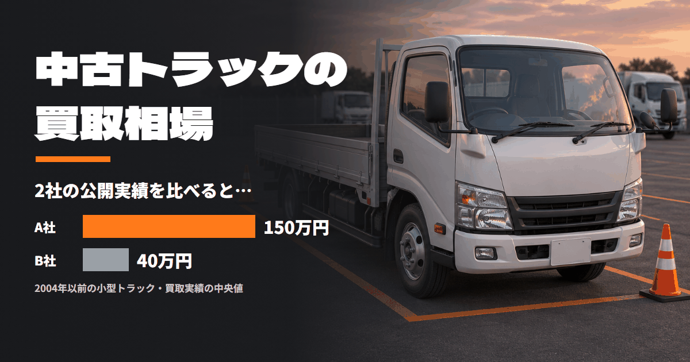

コラム ／ 経営・お金
本記事にはアフィリエイト広告(A8.net)を利用したリンクが含まれる場合があります。リンク経由でお申し込みがあった場合、運営者(SET UP)が報酬を受け取ることがあります。紹介するサービスの選定と評価は、運営者の基準で行っています。
中古トラックの買取相場。公開されている買取実績から見る小型・中型・大型の目安と、事業者が売る前に確認すること

中古トラックの買取相場を調べると、上位に並ぶのは買取業者の自社ページで、相場はそれぞれの会社の実績です。この記事では、2つの買取専門店が公開している買取実績を数えて目安を出し、あわせて事業者がトラックを売る前に確認したい「見積もりの中身」と「消費税」を、国税庁などの公式情報で整理しました。確認日は2026年11月20日です。
トラックを入れ替える、事業をたたむ、使わなくなった車両を整理する。そんなときにまず知りたいのは「いくらで売れるのか」です。ところが、検索で上位に出てくる相場のページは、ほとんどが買取業者の自社ページです。載っている金額はその会社の実績で、ほかの会社と比べた数字ではありません。
この記事では、運用型広告の運用代行をしている運営者(SET UP)が、2つの買取専門店が公開している買取実績を数え、小型・中型・大型の目安を出しました。実際にトラックを売ったわけではないので、業者の対応の良し悪しには触れません。数字はすべて公開データの整理で、数え方も書いています。
結論:ネットの相場は「どの実績を見るか」で数倍変わる
- 2社の公開実績を同じ車種・同じ年式帯で数えても、中央値は2倍以上違うことがある(例:2004年以前の小型トラックは150万円と40万円)。ネットの「相場」は目安にとどめ、自分のトラックの値段は複数社の見積もりで確かめる
- 見積もりは金額だけでなく、リサイクル料金相当額・費用・減額の条件・支払い時期・税込か税抜かをそろえて比べる
- 課税事業者が事業で使っていたトラックを売ると、売却代金に消費税がかかる(国税庁)。個人事業主の場合、売却の所得は原則として総合課税の譲渡所得になる
公開されている買取実績で見る相場の目安
トラック買取専門店の「トラックファイブ」と「Bee Truck」は、買取実績をウェブサイトで公開しています。この2社の実績から、代表的な13車種を小型・中型・大型に分けて数え、年式帯ごとの中央値(真ん中の金額)を出しました。
| クラス・年式 | トラックファイブ | Bee Truck |
|---|---|---|
| 小型 2015年以降 | 290万円 103件 | 233万円 42件 |
| 小型 2005〜2014年 | 150万円 19件 | 66万円 105件 |
| 小型 2004年以前 | 150万円 7件 | 40万円 119件 |
| 中型 2015年以降 | 365万円 44件 | 485万円 21件 |
| 中型 2005〜2014年 | 210万円 34件 | 133万円 89件 |
| 中型 2004年以前 | 215万円 39件 | 100万円 104件 |
| 大型 2015年以降 | 450万円 64件 | 830万円 32件 |
| 大型 2005〜2014年 | 210万円 37件 | 177万円 83件 |
| 大型 2004年以前 | 200万円 11件 | 116万円 39件 |
数え方
- トラックファイブ:公開されている買取実績(2,125件)を車種名で絞り込み、新しい順に各車種30件までを集計しました(計358件)
- Bee Truck:公開されている買取実績(1,202件、2019〜2026年に掲載)をすべて読み、上の13車種に当てはまるもの(計634件)を集計しました。車種名が書かれていないものは除いています。Bee Truck の注記どおり、金額は買取の時点のもので、古い時期の例も含みます
なぜ2社でこれほど違うのか
表を見ると、同じ「2004年以前の小型」でも150万円と40万円、「2015年以降の大型」では450万円と830万円と、2倍以上の差があります。これはどちらが高く買うかという意味ではありません。違いの多くは、どの実績を載せているかの違いです。
- トラックファイブの掲載例は、集計した範囲ではいちばん低いものでも60万円台でした。値段がつかなかった例や、ごく低い例は載っていない可能性があります
- Bee Truck の掲載例には、3万円や10万円といった低い金額も含まれています
- ダンプ・冷凍車・クレーン付きなどの架装(荷台の形)、車両の状態、買い取った時期は、この集計では分けていません
つまり、ネットで見る「相場」は、どの会社のどの実績を見るかで数倍変わります。目安として使うのはよいのですが、自分のトラックがいくらになるかは、実際に見積もりを取らないと分かりません。
査定額を決める5つの要素
上位の記事でもよく挙がる要素です。公開実績の数字とあわせて見ておきます。
- 年式:新しいほど高い傾向は、上の表でも2社に共通しています
- 走行距離:トラックは乗用車より長く走ります。トラックファイブの集計した実績では、走行距離の中央値は中型で約24万km、大型で約52万kmで、それでも値段がついています
- 架装(荷台の形):平ボディ・バン・ダンプ・冷凍車・クレーン付きなど。同じ車種でも大きく変わります
- 車両の状態:エンジンや足回りの状態、修復歴、サビなど
- 需要と時期:国内外の需要や、買い取る会社の販路によって変わります
中型・大型では、2004年以前の車両の中央値が、2005〜2014年とあまり変わりません(トラックファイブの集計)。古いから値段がつかない、と決めつけずに見積もりを取る価値はあります。
売り方の比較。下取り・買取専門店・一括査定
| 売り方 | どんな方法か | 向いているケース | 気をつけたいこと |
|---|---|---|---|
| 下取り | 次のトラックを買う販売店に、今のトラックを引き取ってもらう | 入れ替えで、納車と引き渡しを1回で済ませたい | 値引きと下取り額がまとめて提示されると、下取り額だけを比べにくい |
| 買取専門店 | トラックや重機を専門に買い取る会社に、直接見積もりを頼む | 架装や装備も含めて見てほしい。手放すだけで次の購入はない | 会社ごとに対応エリアや得意な車種が違う。1社だけでは比べられない |
| 一括査定 | 1回の申し込みで、複数の買取業者に見積もりを依頼する | 手間をかけずに複数社の金額を集めたい | 複数社から連絡が来る。対応できる業者がそろうかは車種や地域による |
どの方法を選んでも、2章で見たとおり「1社の金額」だけでは高いか安いか判断できません。少なくとも2〜3社の見積もりを、同じ条件で並べるのが基本です。
見積もりを比べるときの5つの確認点
見積もりの金額だけを並べても、中身がそろっていなければ正しく比べられません。運営者は広告運用の仕事でも、代理店の手数料を表面の料率ではなく総額と条件で比べるようにしています(「広告運用代行の手数料」)。トラックの見積もりも同じで、次の5つを確認しておくと比べやすくなります。答えは見積書や契約書などの文面でもらうのがおすすめです。
- リサイクル料金相当額は、査定額に含まれていますか自動車リサイクル促進センターによると、中古車として売るときは、車両の価値の金額とは別にリサイクル料金相当額を受け取る仕組み。見積書でどう扱われているかを確認する
- 引き取り・名義変更・書類の代行に費用はかかりますか無料をうたう会社も多いが、遠方や不動車の場合など、条件を確認する
- 契約したあとに減額されることはありますか引き渡し後に不具合が見つかった場合などの扱い。今回確認した2社とも、公式サイトに契約後の減額の規定は見当たらなかったので、契約書で確認する
- 代金はいつ、どの方法で支払われますか即日の現金か、振り込みか。振り込みなら、書類と引き渡しのあと何日か
- 金額は税込ですか、税抜ですか課税事業者が売る場合は売却代金に消費税がかかる(6章)。見積書の金額がどちらかで手取りが変わる
事業者がトラックを売るときの消費税と所得
トラックを事業で使っていた個人事業主や会社にとって、見落としやすいのが税金です。上位の記事でもほとんど触れられていません。ここでは国税庁の公表している内容をまとめます。
課税事業者なら、売却代金に消費税がかかる
国税庁の質疑応答事例「事業者の事業用固定資産の売却」は、事業に使っていた建物や機械、車両などの売却も消費税の課税対象になるとし、例として「商品の配達用に使用していたトラックを売った場合は課税の対象」と書いています。
一方、タックスアンサー No.6931 によると、免税事業者が資産を売った場合は消費税は課税されません。自分が課税事業者かどうかで扱いが変わります。
個人事業主の売却の所得は、原則として譲渡所得
タックスアンサー No.3105 では、土地・建物や株式などを除く「その他の資産」の譲渡は、総合課税の譲渡所得として扱うとしています。事業で使っていたトラックを売ったときの所得も、原則としてこれにあたります。また No.6931 は、譲渡所得の計算での消費税の経理処理を、事業所得で選んでいる方式(税込経理・税抜経理)と同じにするよう説明しています。
売却の流れと必要書類
一般的な流れは「申し込み → 査定(出張または写真・電話) → 金額の提示と契約 → 引き渡しと書類の受け渡し → 入金」です。トラックファイブのように、名義変更などの手続きを無料で代行する買取業者もあります。
売る側が用意する主な書類(登録車の場合)
国土交通省の「車を売買等により名義変更するために必要な書類」によると、売買で名義を変えるとき、旧所有者側では主に次の書類が必要です。
- 譲渡証明書(実印を押す)
- 印鑑(登録)証明書(発行から3か月以内)
- 委任状(代理人が申請する場合。実印を押す)
車検証で所有者がリース会社やローン会社になっている場合は、所有者の側の手続きが必要です。どの書類が要るかは状況で変わるので、見積もりのときに買取業者に確認してください。なお、この記事は登録車(普通・小型)のトラックを対象にしています。軽トラックは手続きの窓口が違います。
緑ナンバー・黒ナンバー(事業用)の場合
運送事業で使っている事業用自動車は、名義変更や抹消の前に、運輸支局で減車などの申請・届出を済ませ、「事業用自動車等連絡書(連絡票)」を受け取る手続きがあります(京都運輸支局の案内)。管轄の運輸支局で、必要な手続きを確認してください。
トラック買取専門店2社の公式情報
2章で実績を数えた2社について、公式サイトで確認できたことを並べます。どちらが良いかのランキングではなく、申し込む前に確認したい事実です。
トラックファイブ
- 買取実績を2,125件公開している(年式・走行距離・型式・地域・金額)
- 出張査定は全国対応。沖縄県は要相談(公式のよくあるご質問)
- 査定は無料で、査定後に売らなくても手数料はかからない。名義変更などの書類手続きも無料で代行
- 車検切れや不動車も買取の対象。ローンが残っていても相談できる
公式サイト:トラックファイブ
Bee Truck
- 買取実績を公開している(2019〜2026年に掲載した1,202件。年式・型式・買取年月・金額)
- 買取対応エリアのページでは、北海道・九州(福岡以外)・沖縄・北陸・東北(福島以外)は対象外。トップページには「全国対応」の表記もあるので、申し込む前にエリアのページで確認する
- 査定は無料。代金は、書類と引き渡しの完了後に指定の口座へ振り込み
- 年式・走行距離・状態にかかわらず相談でき、不動車・事故車も買い取れる場合がある
公式サイト:Bee Truck
よくある質問
- Q. 走行距離が30万kmを超えていても売れますか?
- 売れる例はあります。トラックファイブが公開している実績を集計すると、中型の走行距離の中央値は約24万km、大型は約52万kmで、100万kmを超える大型にも値段がついている例があります。ただし金額は状態や架装で大きく変わるので、見積もりで確認してください。
- Q. 車検が切れていても売れますか?
- トラックファイブは公式のよくあるご質問で、車検切れの車両も買取対象としています。Bee Truck も、年式や状態にかかわらず相談できると案内しています。
- Q. 売ったお金に税金はかかりますか?
- 課税事業者が事業で使っていたトラックを売ると、売却代金に消費税がかかります。個人事業主の場合、売却の所得は原則として総合課税の譲渡所得です。具体的な計算は、国税庁のページを確認のうえ、税理士や税務署に相談してください(6章)。
- Q. 見積もりだけ頼んで、売らなくてもいいですか?
- トラックファイブは、出張査定のあとに売らなかった場合も手数料はかからないと案内しています。ほかの会社に頼む場合も、見積もりの段階で費用がかかるかを確認してください。
まとめ
- ネットの「相場」は、どの会社のどの実績を見るかで数倍変わる。2社の公開実績では、同じクラス・同じ年式帯でも中央値が2倍以上違う例があった
- 自分のトラックの値段は、複数社の見積もりを同じ条件で比べて確かめる
- 見積もりは、リサイクル料金相当額・費用・契約後の減額・支払い時期・税込か税抜かをそろえる
- 課税事業者が事業用のトラックを売ると消費税がかかる。個人事業主の所得は原則として総合課税の譲渡所得
- 名義変更には譲渡証明書・印鑑証明書などが必要。緑・黒ナンバーは運輸支局の手続きも確認する